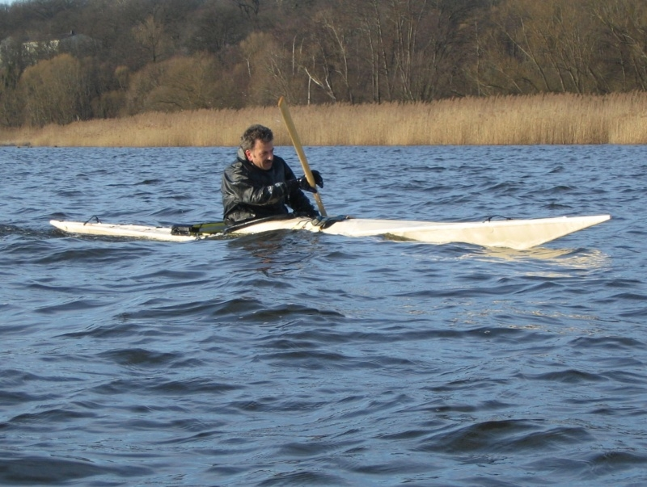

| Sea Ranger by Thomas Ziegler (DE) | Menu Last Page Next Page |
|

Thomas, from Brandenburg, Germany paddles his Sea Ranger folder. He added a roll-up aft deck closure and reports very little water entry while rolling.
Additional pics can be seen on the next page.
|
|